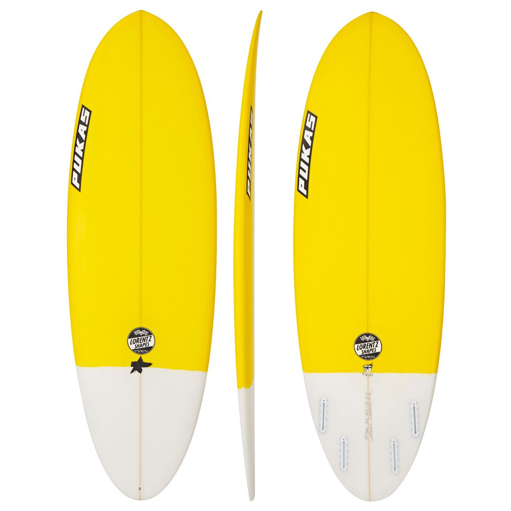

Pukas Resin Cake Surfboard

Описание товара
The Pukas Resin Cake is all about summer FUN! With the short and wide design, it'll get you going down the line with unimaginable speed on days when the waves are smaller and less powerful.
Характеристики товара
-
Rider Ability: Intermediate to advanced
-
Construction: PU (Polyurethane) is the industry standard, strong, reliable and responsive
-
Suitable Conditions: 1 - 3ft
-
Template: Short and wide, we would recommend surfing the resin cake 4-6 inches smaller than your shortboard
-
Nose: A big wide nose that''ll help the board to paddle like a steamboat as-well-as getting you though junky sections
-
Tail: A full round tail, that gives the board more lift resulting in looser feel perfect for releasing some fin
-
Rail: Full rails that offer an incredible turning radius from the fins as well as being more forgiving
-
Bottom Shape: A full concave bottom going into a VEE through the tail
-
Rocker: Soft rocker that helps to provide the board with is insane speed
Подробное описание
The Quiver Killer works well in small surf with the larger surface area and volume but the tail and nose have been pulled in meaning it gets more aggressive in larger waves with power behind them. The added rocker stops the rails from feeling 'boggy' in larger surf. A great board for all round conditions, feels fun and effortless in small surf whilst precise and forgiving in more powerful waves.
This board comes as a 5 fin setup which means it can be ridden as either a classic 3 fin thruster or as a quad. Please note that fins are sold separately.